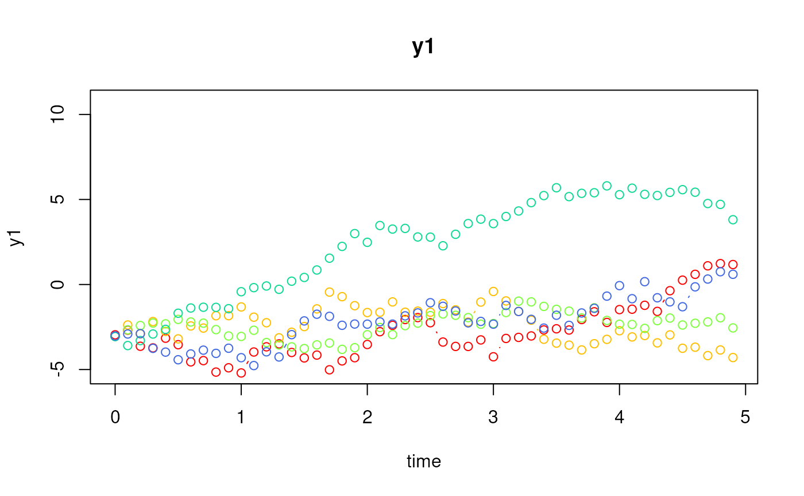
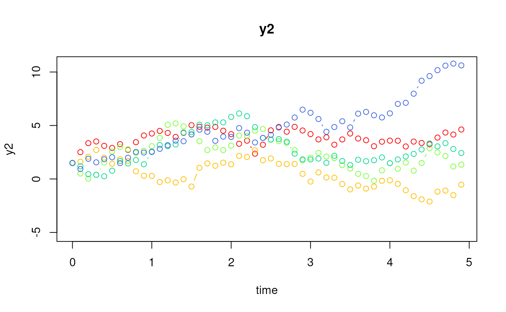
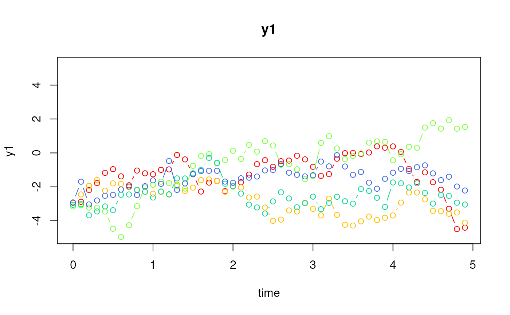
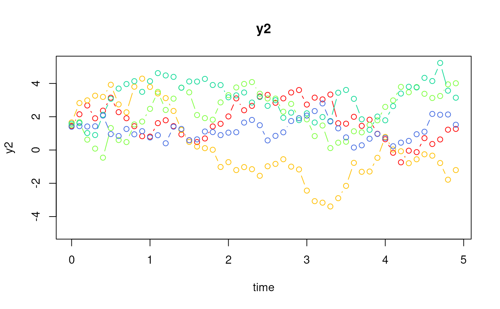
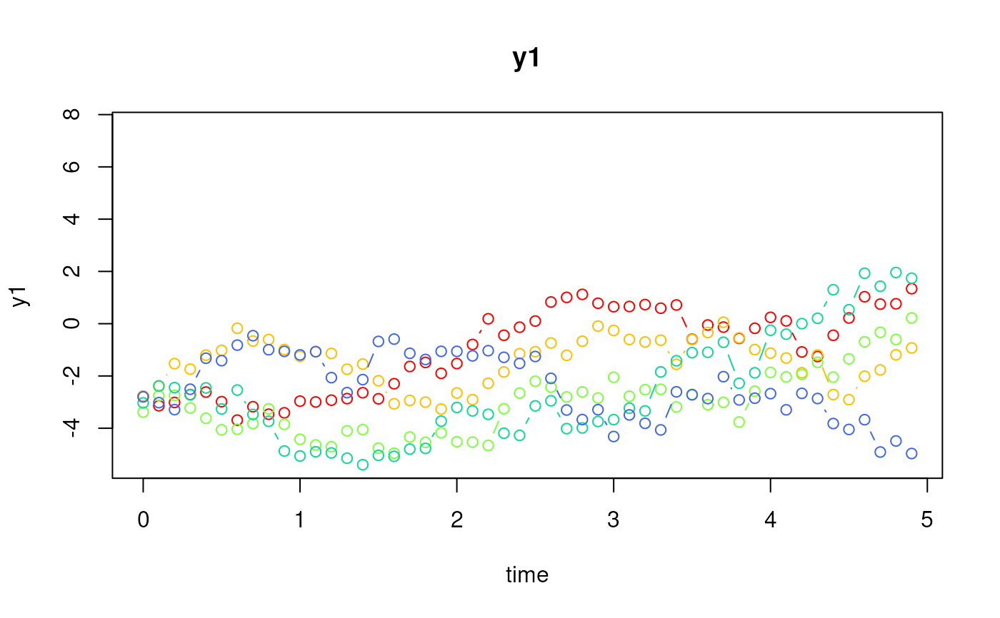
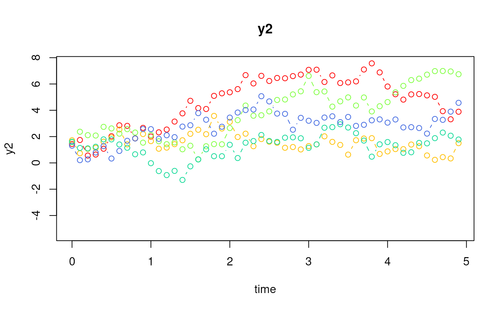

Simulate Data from the Linear Stochastic Differential Equation Model using a State Space Model Parameterization (Fixed Parameters)
Source:R/simStateSpace-sim-ssm-lin-sde-fixed.R
SimSSMLinSDEFixed.RdThis function simulates data from the linear stochastic differential equation model using a state space model parameterization. It assumes that the parameters remain constant across individuals and over time.
Usage
SimSSMLinSDEFixed(
n,
time,
delta_t = 1,
mu0,
sigma0_l,
iota,
phi,
sigma_l,
nu,
lambda,
theta_l,
type = 0,
x = NULL,
gamma = NULL,
kappa = NULL
)Arguments
- n
Positive integer. Number of individuals.
- time
Positive integer. Number of time points.
- delta_t
Numeric. Time interval (\(\Delta_t\)).
- mu0
Numeric vector. Mean of initial latent variable values (\(\boldsymbol{\mu}_{\boldsymbol{\eta} \mid 0}\)).
- sigma0_l
Numeric matrix. Cholesky factorization (
t(chol(sigma0))) of the covariance matrix of initial latent variable values (\(\boldsymbol{\Sigma}_{\boldsymbol{\eta} \mid 0}\)).- iota
Numeric vector. An unobserved term that is constant over time (\(\boldsymbol{\iota}\)).
- phi
Numeric matrix. The drift matrix which represents the rate of change of the solution in the absence of any random fluctuations (\(\boldsymbol{\Phi}\)).
- sigma_l
Numeric matrix. Cholesky factorization (
t(chol(sigma))) of the covariance matrix of volatility or randomness in the process (\(\boldsymbol{\Sigma}\)).- nu
Numeric vector. Vector of intercept values for the measurement model (\(\boldsymbol{\nu}\)).
- lambda
Numeric matrix. Factor loading matrix linking the latent variables to the observed variables (\(\boldsymbol{\Lambda}\)).
- theta_l
Numeric matrix. Cholesky factorization (
t(chol(theta))) of the covariance matrix of the measurement error (\(\boldsymbol{\Theta}\)).- type
Integer. State space model type. See Details for more information.
- x
List. Each element of the list is a matrix of covariates for each individual
iinn. The number of columns in each matrix should be equal totime.- gamma
Numeric matrix. Matrix linking the covariates to the latent variables at current time point (\(\boldsymbol{\Gamma}\)).
- kappa
Numeric matrix. Matrix linking the covariates to the observed variables at current time point (\(\boldsymbol{\kappa}\)).
Value
Returns an object of class simstatespace
which is a list with the following elements:
call: Function call.args: Function arguments.data: Generated data which is a list of lengthn. Each element ofdatais a list with the following elements:id: A vector of ID numbers with lengthl, wherelis the value of the function argumenttime.time: A vector time points of lengthl.y: Albykmatrix of values for the manifest variables.eta: Albypmatrix of values for the latent variables.x: Albyjmatrix of values for the covariates (when covariates are included).
fun: Function used.
Details
Type 0
The measurement model is given by $$ \mathbf{y}_{i, t} = \boldsymbol{\nu} + \boldsymbol{\Lambda} \boldsymbol{\eta}_{i, t} + \boldsymbol{\varepsilon}_{i, t}, \quad \mathrm{with} \quad \boldsymbol{\varepsilon}_{i, t} \sim \mathcal{N} \left( \mathbf{0}, \boldsymbol{\Theta} \right) $$ where \(\mathbf{y}_{i, t}\), \(\boldsymbol{\eta}_{i, t}\), and \(\boldsymbol{\varepsilon}_{i, t}\) are random variables and \(\boldsymbol{\nu}\), \(\boldsymbol{\Lambda}\), and \(\boldsymbol{\Theta}\) are model parameters. \(\mathbf{y}_{i, t}\) represents a vector of observed random variables, \(\boldsymbol{\eta}_{i, t}\) a vector of latent random variables, and \(\boldsymbol{\varepsilon}_{i, t}\) a vector of random measurement errors, at time \(t\) and individual \(i\). \(\boldsymbol{\nu}\) denotes a vector of intercepts, \(\boldsymbol{\Lambda}\) a matrix of factor loadings, and \(\boldsymbol{\Theta}\) the covariance matrix of \(\boldsymbol{\varepsilon}\).
An alternative representation of the measurement error is given by $$ \boldsymbol{\varepsilon}_{i, t} = \boldsymbol{\Theta}^{\frac{1}{2}} \mathbf{z}_{i, t}, \quad \mathrm{with} \quad \mathbf{z}_{i, t} \sim \mathcal{N} \left( \mathbf{0}, \mathbf{I} \right) $$ where \(\mathbf{z}_{i, t}\) is a vector of independent standard normal random variables and \( \left( \boldsymbol{\Theta}^{\frac{1}{2}} \right) \left( \boldsymbol{\Theta}^{\frac{1}{2}} \right)^{\prime} = \boldsymbol{\Theta} . \)
The dynamic structure is given by $$ \mathrm{d} \boldsymbol{\eta}_{i, t} = \left( \boldsymbol{\iota} + \boldsymbol{\Phi} \boldsymbol{\eta}_{i, t} \right) \mathrm{d}t + \boldsymbol{\Sigma}^{\frac{1}{2}} \mathrm{d} \mathbf{W}_{i, t} $$ where \(\boldsymbol{\iota}\) is a term which is unobserved and constant over time, \(\boldsymbol{\Phi}\) is the drift matrix which represents the rate of change of the solution in the absence of any random fluctuations, \(\boldsymbol{\Sigma}\) is the matrix of volatility or randomness in the process, and \(\mathrm{d}\boldsymbol{W}\) is a Wiener process or Brownian motion, which represents random fluctuations.
Type 1
The measurement model is given by $$ \mathbf{y}_{i, t} = \boldsymbol{\nu} + \boldsymbol{\Lambda} \boldsymbol{\eta}_{i, t} + \boldsymbol{\varepsilon}_{i, t}, \quad \mathrm{with} \quad \boldsymbol{\varepsilon}_{i, t} \sim \mathcal{N} \left( \mathbf{0}, \boldsymbol{\Theta} \right) . $$
The dynamic structure is given by $$ \mathrm{d} \boldsymbol{\eta}_{i, t} = \left( \boldsymbol{\iota} + \boldsymbol{\Phi} \boldsymbol{\eta}_{i, t} \right) \mathrm{d}t + \boldsymbol{\Gamma} \mathbf{x}_{i, t} + \boldsymbol{\Sigma}^{\frac{1}{2}} \mathrm{d} \mathbf{W}_{i, t} $$ where \(\mathbf{x}_{i, t}\) represents a vector of covariates at time \(t\) and individual \(i\), and \(\boldsymbol{\Gamma}\) the coefficient matrix linking the covariates to the latent variables.
Type 2
The measurement model is given by $$ \mathbf{y}_{i, t} = \boldsymbol{\nu} + \boldsymbol{\Lambda} \boldsymbol{\eta}_{i, t} + \boldsymbol{\kappa} \mathbf{x}_{i, t} + \boldsymbol{\varepsilon}_{i, t}, \quad \mathrm{with} \quad \boldsymbol{\varepsilon}_{i, t} \sim \mathcal{N} \left( \mathbf{0}, \boldsymbol{\Theta} \right) $$ where \(\boldsymbol{\kappa}\) represents the coefficient matrix linking the covariates to the observed variables.
The dynamic structure is given by $$ \mathrm{d} \boldsymbol{\eta}_{i, t} = \left( \boldsymbol{\iota} + \boldsymbol{\Phi} \boldsymbol{\eta}_{i, t} \right) \mathrm{d}t + \boldsymbol{\Gamma} \mathbf{x}_{i, t} + \boldsymbol{\Sigma}^{\frac{1}{2}} \mathrm{d} \mathbf{W}_{i, t} . $$
State Space Parameterization
The state space parameters as a function of the linear stochastic differential equation model parameters are given by $$ \boldsymbol{\beta}_{\Delta t_{{l_{i}}}} = \exp{ \left( \Delta t \boldsymbol{\Phi} \right) } $$
$$ \boldsymbol{\alpha}_{\Delta t_{{l_{i}}}} = \boldsymbol{\Phi}^{-1} \left( \boldsymbol{\beta} - \mathbf{I}_{p} \right) \boldsymbol{\iota} $$
$$ \mathrm{vec} \left( \boldsymbol{\Psi}_{\Delta t_{{l_{i}}}} \right) = \left[ \left( \boldsymbol{\Phi} \otimes \mathbf{I}_{p} \right) + \left( \mathbf{I}_{p} \otimes \boldsymbol{\Phi} \right) \right] \left[ \exp \left( \left[ \left( \boldsymbol{\Phi} \otimes \mathbf{I}_{p} \right) + \left( \mathbf{I}_{p} \otimes \boldsymbol{\Phi} \right) \right] \Delta t \right) - \mathbf{I}_{p \times p} \right] \mathrm{vec} \left( \boldsymbol{\Sigma} \right) $$ where \(p\) is the number of latent variables and \(\Delta t\) is the time interval.
References
Chow, S.-M., Ho, M. R., Hamaker, E. L., & Dolan, C. V. (2010). Equivalence and differences between structural equation modeling and state-space modeling techniques. Structural Equation Modeling: A Multidisciplinary Journal, 17(2), 303–332. doi:10.1080/10705511003661553
Chow, S.-M., Losardo, D., Park, J., & Molenaar, P. C. M. (2023). Continuous-time dynamic models: Connections to structural equation models and other discrete-time models. In R. H. Hoyle (Ed.), Handbook of structural equation modeling (2nd ed.). The Guilford Press.
Harvey, A. C. (1990). Forecasting, structural time series models and the Kalman filter. Cambridge University Press. doi:10.1017/cbo9781107049994
See also
Other Simulation of State Space Models Data Functions:
LinSDE2SSM(),
SimBetaN(),
SimPhiN(),
SimSSMFixed(),
SimSSMIVary(),
SimSSMLinGrowth(),
SimSSMLinGrowthIVary(),
SimSSMLinSDEIVary(),
SimSSMOUFixed(),
SimSSMOUIVary(),
SimSSMVARFixed(),
SimSSMVARIVary(),
TestPhi(),
TestStability(),
TestStationarity()
Examples
# prepare parameters
set.seed(42)
## number of individuals
n <- 5
## time points
time <- 50
delta_t <- 0.10
## dynamic structure
p <- 2
mu0 <- c(-3.0, 1.5)
sigma0 <- 0.001 * diag(p)
sigma0_l <- t(chol(sigma0))
iota <- c(0.317, 0.230)
phi <- matrix(
data = c(
-0.10,
0.05,
0.05,
-0.10
),
nrow = p
)
sigma <- matrix(
data = c(
2.79,
0.06,
0.06,
3.27
),
nrow = p
)
sigma_l <- t(chol(sigma))
## measurement model
k <- 2
nu <- rep(x = 0, times = k)
lambda <- diag(k)
theta <- 0.001 * diag(k)
theta_l <- t(chol(theta))
## covariates
j <- 2
x <- lapply(
X = seq_len(n),
FUN = function(i) {
matrix(
data = stats::rnorm(n = time * j),
nrow = j,
ncol = time
)
}
)
gamma <- diag(x = 0.10, nrow = p, ncol = j)
kappa <- diag(x = 0.10, nrow = k, ncol = j)
# Type 0
ssm <- SimSSMLinSDEFixed(
n = n,
time = time,
delta_t = delta_t,
mu0 = mu0,
sigma0_l = sigma0_l,
iota = iota,
phi = phi,
sigma_l = sigma_l,
nu = nu,
lambda = lambda,
theta_l = theta_l,
type = 0
)
plot(ssm)


# Type 1
ssm <- SimSSMLinSDEFixed(
n = n,
time = time,
delta_t = delta_t,
mu0 = mu0,
sigma0_l = sigma0_l,
iota = iota,
phi = phi,
sigma_l = sigma_l,
nu = nu,
lambda = lambda,
theta_l = theta_l,
type = 1,
x = x,
gamma = gamma
)
plot(ssm)


# Type 2
ssm <- SimSSMLinSDEFixed(
n = n,
time = time,
delta_t = delta_t,
mu0 = mu0,
sigma0_l = sigma0_l,
iota = iota,
phi = phi,
sigma_l = sigma_l,
nu = nu,
lambda = lambda,
theta_l = theta_l,
type = 2,
x = x,
gamma = gamma,
kappa = kappa
)
plot(ssm)

